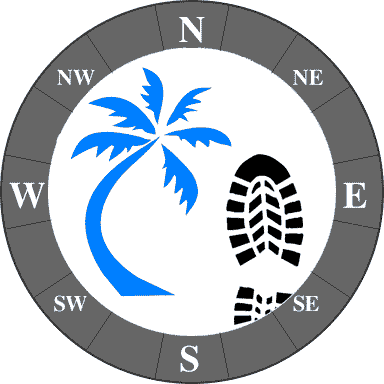
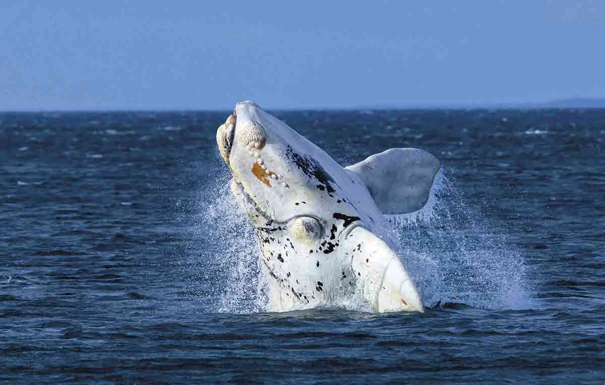
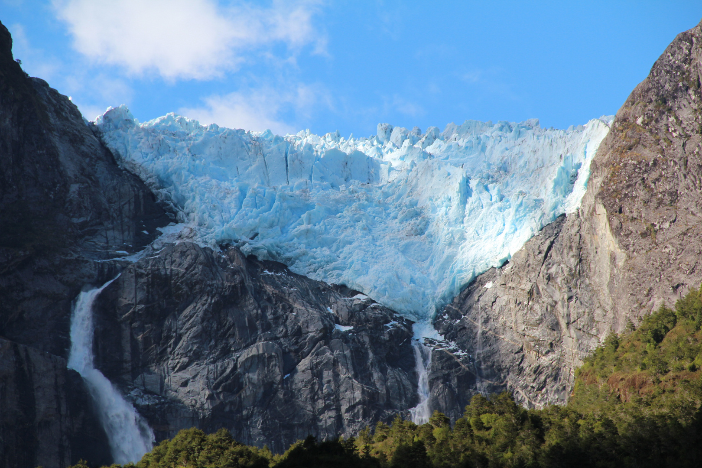
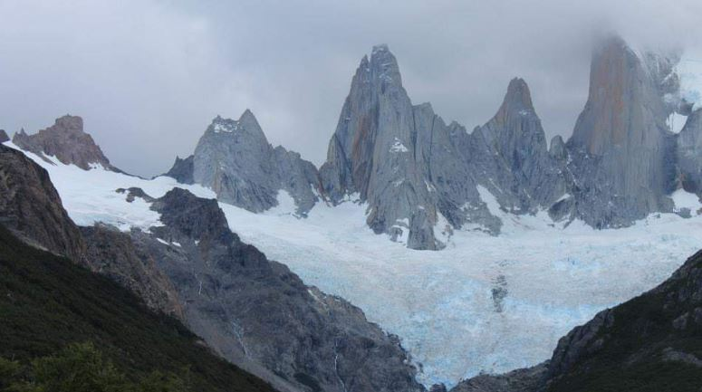
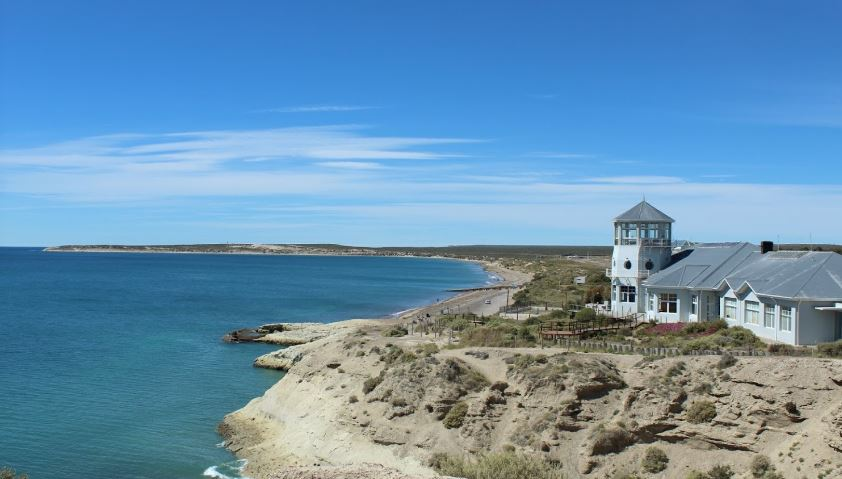
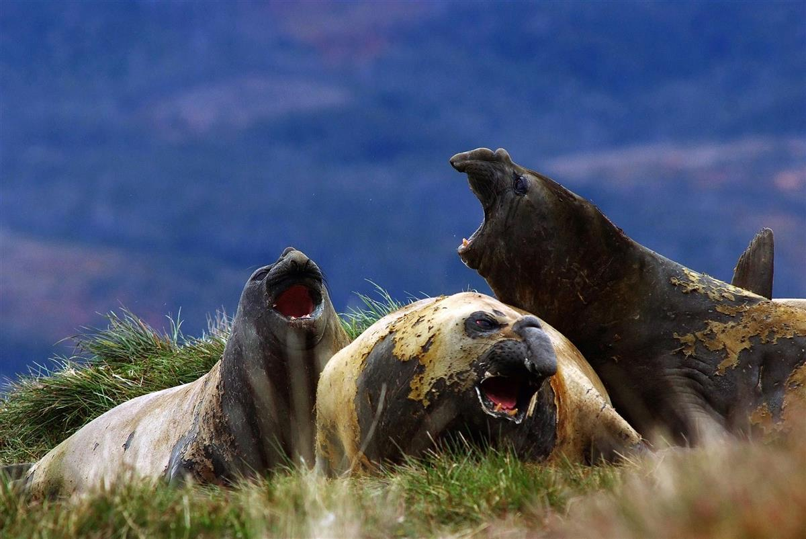
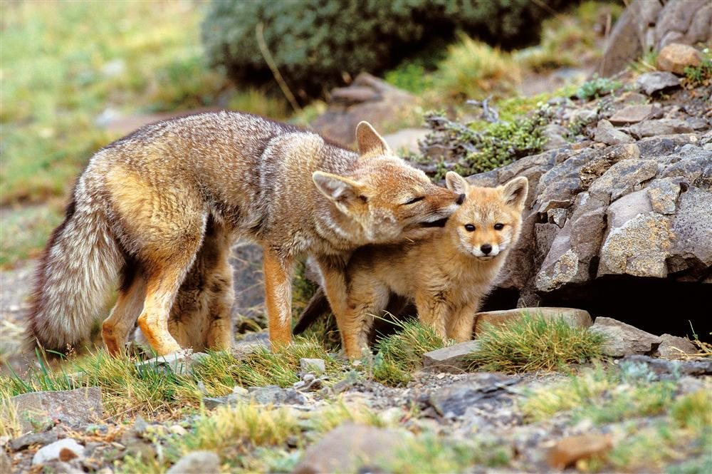
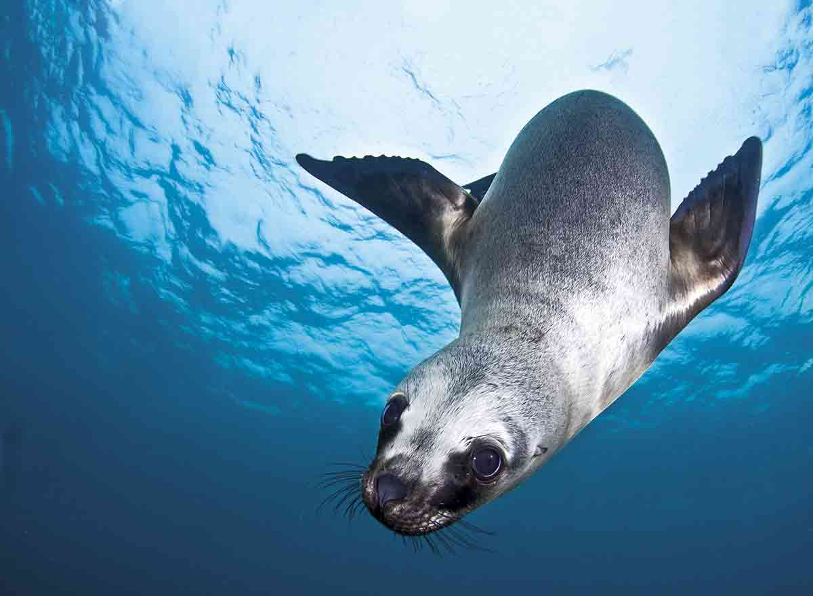
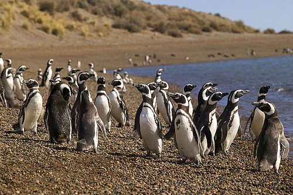

Una travesía entre glaciares y montes colosales hasta el extremo sur del continente americano.

Además de ser el reservorio de flora y fauna costera mas importante de la patagonia es un remanso de paz donde el mar, sinuoso y calmo, acaricia la piel de las especies que la habitan, y donde al pisar sus cálidas arenas, el viajero sentirá la ilusión de un tiempo sin fin.
Es una de las regiones más bellas en el sur de Chile con grandes glaciares, fiordos y montañas nevadas. El Parque Nacional Laguna San Rafael abarca los Campos de Hielo Norte de la Patagonia con numerosos glaciares en los lagos interiores y ríos. Las cumbres de las montañas incluyen el cerro Castillo de 2,675 metros de altura y terreno serrado, ubicado dentro de una reserva natural del mismo nombre. También dentro de esta región patagónica, podemos encontrar el Parque Nacional Queulat donde su máximo atractivo turístico es el "Ventisquero colgante".


El Parque Nacional comprende un escenario de montañas, lagos y bosques, incluyendo una vasta porción de la Cordillera de los Andes prácticamente cubierta de hielo y nieve al oeste y la árida estepa Patagónica al este. El Parque Nacional Los Glaciares, cubre una superficie aproximada de 600.000 hectáreas. De este gran campo de hielo se desprenden 47 glaciares, entre ellos: Marconi, Viedma, Moyano, Upsala, Agassiz, Bolado, Onelli, Peineta, Spegazzini, Mayo, Ameghino, Moreno y Frias , todos ellos pertenecientes a la cuenca Atlántica.
Doce horas de carretera distancian de El Calafate a Ushuaia, la ciudad más austral del mundo. La travesía hasta ese confín hace escala en Río Gallegos, última localidad antes del cruce en transbordador del Estrecho de Magallanes. Al traspasar el Paso Garibaldi el paisaje cambia por completo. Si antes el viento ondeaba los arbustos esparcidos en la estepa, ahora la pradera deja paso a bosques de hayas y robles australes que tapizan de verde la ruta hacia la única ciudad argentina sobre la costa del Pacífico.





¡Descubre la magia del hielo! 🧊✨
Vive una aventura única en La Patagonia. ¡Reserva tu lugar ahora y camina sobre glaciares milenarios! 🇦🇷✈️